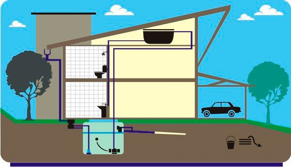
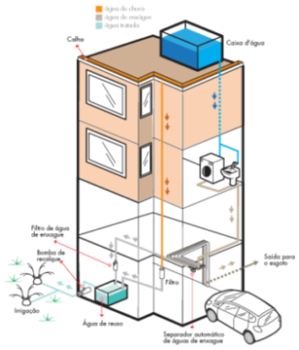

O que é Reúso da Água?
O reuso de água ocorre quando é dada uma nova finalidade a este recurso após sua primeira utilização, ou seja, um objetivo prático ao invés de apenas ir para o esgoto ou galeria pluvial.
É necessário lembrar do papel crucial da sociedade na preservação da água. Para tal, podemos nos apoiar em modelos de reuso, sejam residenciais ou industriais. Dependendo da origem e destino, pode ser necessário um tratamento da água para essas
Em determinados países é comum o uso de medidas de contenção de gastos da água e sua reutilização. No Japão, por exemplo, a água que sai das pias, ralos do box ou banheiras vão para reservatórios para serem reutilizadas em vasos sanitários de condomínios, hotéis, hospitais, clínicas, etc.
Reúso de água pluvial
Um dos modos mais simples de reaproveitamento de água é captando a chuva por meio de telhados, calhas e terraços.
Utilizar a água obtida por esse modo não exige uma grande estrutura ou análise, por ser comumente utilizada para fins não-potáveis. Os usos mais comuns portanto, são: lavar o carro, lavar pisos e vasos sanitários. Fora da residência, seu uso pode ser em irrigação e procedimentos industriais.
Mesmo para limpeza a água deve ser clorada, evitando transmitir doenças, devido a ratos e insetos que contaminam os locais de captação. O objetivo é deixar a água clara, sem cor e sem odor.
A Organização Mundial da Saúde (OMS) define que o reuso potável deverá atestar a não existência de coliformes fecais, partícula virótica ou efeitos tóxicos para seres humanos. Que no caso pode feito através da fervura, radiação ou aquecimento solar.
O padrão para melhor aproveitamento da água é o NBR 15527, estabelecido pela Associação Brasileira de Normas Técnicas (ABNT). O modelo passa por pelo menos três tópicos: modo de coleta, local de armazenamento e finalidade de uso.
A norma determina que apenas a água diretamente do telhado deverá ser coletada a fim de evitar contaminações. A água não deve ter contato com o solo, por exemplo.
O local de armazenamento deve ser uma cisterna, sem exposição ao sol. Ela deverá ser dimensionada conforme o tamanho do telhado e o índice pluviométrico da região. Existem inclusive empresas especializadas em determinar o tamanho da cisterna a ser usada.
O uso de água pluvial ajuda a proteger a cidade contra enchentes, contribui para diminuir a captação dos corpos hídricos e os investimentos são de baixo custo.
Reúso de água cinza
A água cinza se refere a água que sai de pias ou ralos e que não contém uma carga de poluição elevada.
O método exige uma estrutura de encanamentos bombas hidráulicas e caixas d’água. A seguir temos duas figuras de como um sistema de reuso de água cinza pode funcionar em prédios ou residências.
A principal finalidade desse tipo de reuso é dar descarga no vaso sanitário. Apenas o processo de lavagem de roupa, por exemplo, utiliza em média 100 litros de água, o suficiente para dar 16 descargas. A quantidade total de água cinza pode chegar a 80% do total utilizado pelo do imóvel.
Essa água contém bactérias, fungos, vírus e produtos químicos e, portanto, deverá receber ao menos água sanitária para conter a proliferação de doenças, além de ser mantida coberta para evitar a reprodução de agentes transmissores de doenças como o Aedes Aegypti. Também é recomendável o recipiente possuir uma torneira na parte inferior para facilitar sua limpeza.
O valor das instalações para reuso de água cinza deverá ser feito com um especialista, uma vez que exigem componentes específicos por projeto. Os valores iniciais para reservatório e bomba de tamanho inicial somam aproximadamente 600 reais e são parte essencial do projeto.
Como todo o sistema depende de dimensionamento de consumo e potência necessária da bomba, provavelmente esses valores serão revistos.
A importância da água de reuso
O uso responsável da água é fundamental não somente nas regiões metropolitanas, mas em todo o mundo. Cada litro de água de reuso utilizado representa um litro de água conservada em nossos mananciais.
O assunto é tão importante que faz parte da Estratégia Global para Administração da Qualidade das Águas, proposta pela ONU, para preservação do meio ambiente. É uma maneira inteligente e capaz de assegurar que as gerações futuras tenham acesso a esse recurso tão precioso e essencial à vida: a água potável. Transporte da água de reuso
Como a Sabesp não possui veículos específicos para esse fim, o transporte do produto fica a cargo da empresa interessada.